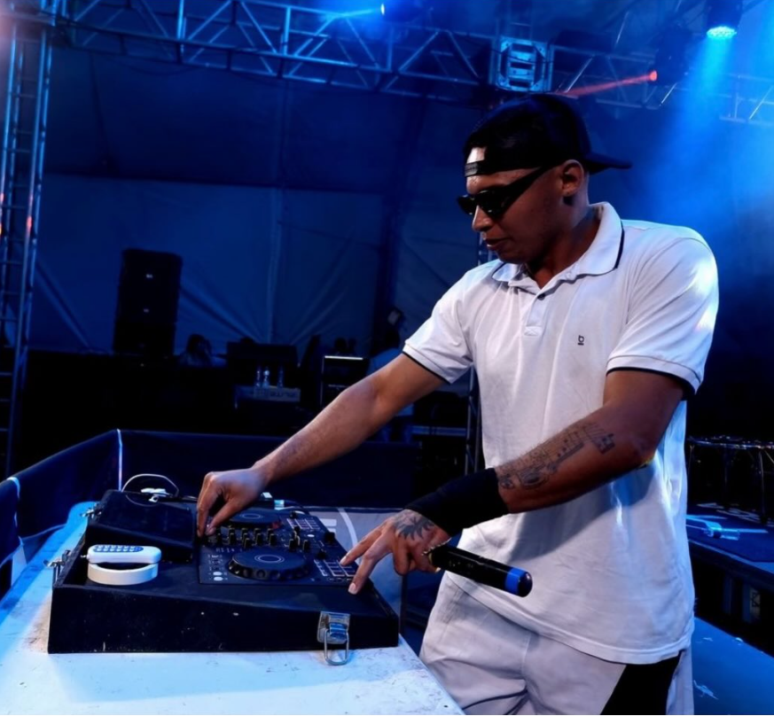

DJ · SANTA BÁRBARA MG · DESDE 2006
"Nada é impossível para seguir seu sonho."
Versatilidade em todos os estilos e a energia certa para conduzir cada evento do início ao fim. De grandes festivais a celebrações particulares.


Quem é o DJ Kennim
Iniciou em 2006, movido pela paixão pela música. Dos pequenos eventos aos grandes palcos, construiu uma trajetória brilhante, com mais de mil eventos realizados ao longo de duas décadas.
Seu diferencial está na versatilidade: domina todos os estilos e tem o feeling para manter o público animado do início ao fim. Já se apresentou em grandes eventos, como em Barretos-SP, e marca presença quase todos os anos na maior festa de Santa Bárbara, o Torneio Leiteiro.
Sediado em Santa Bárbara-MG, atende eventos em qualquer região.
Contratar para o seu eventoRepertório
Repertório montado sob medida para cada evento. Entre os mais pedidos:
Pra qualquer ocasião
Do início ao fim, com a trilha certa para cada momento da celebração.
Aniversários, confraternizações e comemorações em família.
Uma noite memorável para toda a turma.
Confraternizações e eventos de empresa com o tom ideal.
Para manter o público animado a noite inteira.
Experiência em grandes palcos, como Barretos e o Torneio Leiteiro.
Galeria
Registros de algumas apresentações ao vivo.
Veja mais no Instagram @djkennim2026oficialProcesso simples
Envie uma mensagem pelo WhatsApp, Instagram ou e-mail com a data, o local e o tipo de evento.
Um valor sob medida para o seu evento, com ou sem estrutura de som, conforme a sua necessidade.
No dia, conduz o evento do início ao fim com a energia certa para o público. Apresentações a partir de 1h30, ajustáveis conforme o evento.
Atua sozinho ou, dependendo do evento, acompanhado de dançarinas. Estrutura de som também disponível. Todos os detalhes são definidos no orçamento.
Entre em contato para um orçamento sem compromisso. Resposta rápida garantida.
Marcas, produtores e empresas: o DJ Kennim está aberto a parcerias, divulgações e ações publicitárias. Para propostas comerciais, fale por um dos canais acima.